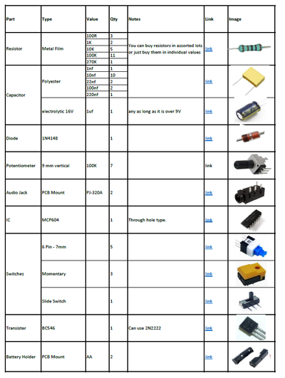
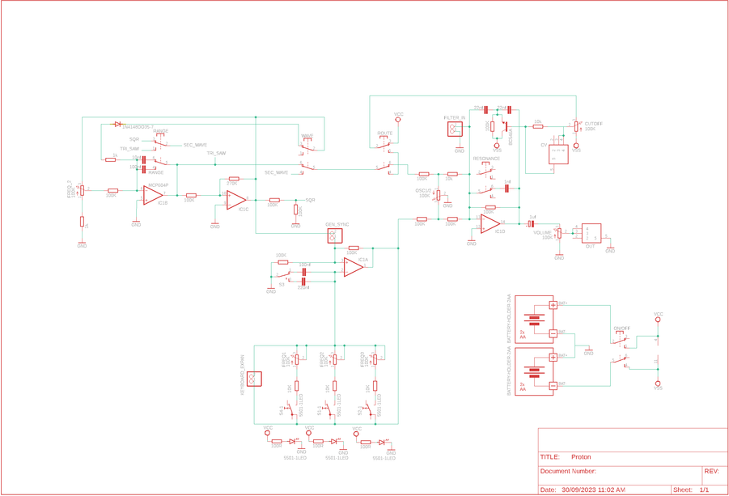
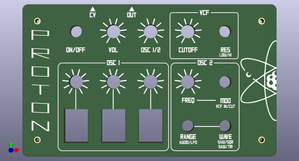
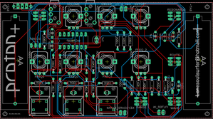
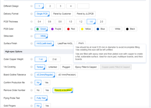

This is the 2nd in a series of little synths that I'll be publishing over the next few builds.
Like my Elements synth, I've kept everything as simple as possible on this build so anyone with a soldering iron and basic soldering skills can make it.
I've done away with a case and fancy power supplies to keep the build simple.
Props to Synther Jack who designed this amazing little synth.
All I've done is redesigned the PCB and created a front panel.
I've also done a couple of mods and have included these on this build.
Please check out Synther Jacks write up if you want a thorough run through on how the synth works.
The synth runs off 1 IC which is an incredible feat when you consider the amazing sounds this beast can produce. The other amazing thing about this synth is it only needs 2 X AA batteries to power it!
It's a blast to play with and can be connected to a sequencer which really shows off the sounds this little synth is capable of producing.
If you don't have a sequencer then don't worry - it's still tonnes of fun to play.
I've provided all of the gerber files, schematics etc in this build so all you need to do is to get them printed (I'll go through how to do this as well) and add the components.
Check out the vid to hear it in action



Instead of adding a long list of parts to this step - I decided to instead include the parts list as a PDF file which is attached.
The file includes all of the components and auxiliary parts that you will need to put the circuit board together.
I have included links and images of each part so you can easily find/buy/identify them.
I think it will be handy also as a PDF as you can print it off, visit your local electronics store and tick them off as you get them.
The parts list is also available on my GitHub Page in Excel format
The below parts are the rest that you will need to build the synth.
PARTS (Other than circuit components):
That's it! You don't have to worry bout building a case because it doesn't have one :)
The rest of the parts can be found in the PDF attached below or on my GitHub Page




Firstly, all of the files that you need can be found in my GitHub Page
To get your own PCB and front panel printed, you will need to send the Gerber files to a PCB manufacturer like JLCPCB (Not affiliated) who will print the boards for you.
If you have no idea how to do this well I've put together an Instructable on how to get your broads printed which you can find here.
NOTE: the ,manufacture will include a order number on both the PCB and front panel.
It doesn't really matter about including it on the PCB but you don't want to do what I did and have it included on the front panel!
You can 'specify a location' once the Gerber files have been loaded so hit this and the manufacturer will add it to the back of the front panel.
You can also just hit 'No' when asked if you want to remove the order number.
However, this costs $2.
Front Panel
The front panel is actually just a PCB without the components!
I use the slik screen on the PCB for printing the design and then include drill holes for the components.
All this information is in the Gerber files for the front panel which the manufacturer uses to print the board.
If you are interested in creating your own front panels then I highly recommend watching this YouTube vid.
I watched it as couple times and also put together a step by step guide for myself which I have also included as a PDF in this step.
In my GitHub Page you will also find the Eagle schematic and board (PCB) files. You can play around and modify these if you like.
Parts list for the circuit board can be found in the supplies step above and I've also provided the list in excel which can also be found (surprise) in my Google Drive.


The board is 2 sidded, top side has all of the controls such as potentiometers, switches etc .
The reverse side has all of the passive components like the resistors, capacitors, IC etc.
We'll be starting with the reverse side first.
You always want to start with the lowest profile components which in most cases this is the resistors.
STEPS:


STEPS
There actually isn't a lot of passive components on this synth!


Now it is time to flip the PCB over and add the components to the front of the board. These are the control components like the potentiometers and switches
STEPS:
Best to test the board now and make sure everything works.
Add a battery, turn the synth on and plug in a portable speaker.
You should hear the synth make noise.
If not, play around with the pots and switches a little.
If you still don't hear anything then you might need to do some troubleshooting.


Adding the front panel to the PCB and watching it fit perfectly over the switches and pots is a great feeling.
The design and look of the synth before then is just a concept so when everything fits just right makes it all worth while.
STEPS:
Now at this stage you could leave it as is and be done.
The spacers acting like little legs holding the batteries and components away from the table.
However, I decided to add some clear acrylic to the bottom to hep protect the electronics.
It's really easy to do and gives the synth a nice finish so check out the next step on how to do it


STEPS:


I don't want to give too many tips on how to play it as it's fun just working it out for yourself. I thought I should give a few hits and tricks so have a read of the below to get started.
STEPS:
I think I'm going to leave it there. You can mess about with different combinations of waveforms and oscillators to create some amazing sounds with this little synth.
If you do decide to make this then good luck with the build and let me know if you have any questions.